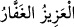
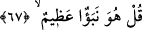
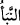
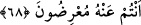
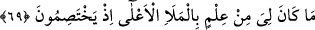

__WORD__
“O, tek ve yegâne üstün olan Allah’tan başka hiçbir ilah yoktur. O, göklerin, yerin
ve bu ikisi arasındaki herşeyin rabbi olan “güçlü” ve “bağışlayıcı” zâttır.”
Tâcü’l-masâdir’de der ki: (__WORD__) kelimesi, açlıktan veya bir yaradan dolayı kendi
içine burulup kıvrılmak demektir.
“Allah” ism-i şerifi üzerine ilâve ile dillerde dolaşan bu isimler, tevhîd esasını takrîr
etmektedir. Çünkü “el-Vâhid” isminin Allah ismine ilâvesi ile zikredilmesi, O’nun
tekliğini ortaya koymakta; “el-Kahhâr”, “el-Azîz” isimlerinin ilâve edilmesi tevhîdi
reddeden müşrikleri tehdîd etmekte; “el-Gaffâr”ın ilâvesi O’nu tevhîd edenlere birtakım
vaadlerde bulunmaktadır. Ayrıca burada kahır ve güç vasıflarıyla tehdidde bulunulmuş
olması ve Allah’ın “Kahhar” oluşunun “Gaffâr” oluşundan önce zikredilmesi, inzâr ve
sakındırma makamının hakkını verebilme amacına mâtuftur.
67. De ki: Bu büyük bir haberdir.
“De ki: Bu” Kur’an ve size haber vermekte olduğu tevhîd, nübüvvet ve haşr, cennet,
cehennem gibi kıyamet haberleri “büyük bir haberdir” ve müthiş bir şeydir. Çünkü o,
Rabb’in kadîm kelâmıdır; O’nun değerli nezdinden gelmiştir ve benim gerçekten
peygamber olup olmadığıma ondan istidlâl ile hükmedilebilir. (__WORD__), Hz. Peygamber’in
(s.a.) Allah tarafından haber vermiş olduğu şeye denir ve ancak büyük bir faydası
olacak haberler hakkında kullanılır.
68. Ama siz ondan yüz çeviriyorsunuz.
“Ama siz ondan yüz çeviriyorsunuz.” Son derece dalâlet ve cehâlet içinde
olduğunuzdan, onu yalan sayıp üzerinde tefekkür etmiyorsunuz. O kadar azametli
olmasına ve ona tamamen yönelip güzel bir şekilde kabul etmenizi gerektirmesine
rağmen ona îman etmiyorsunuz. Oysa kurtuluş tasdikte; helâk ise tekzibdedir.
69. Onlar orada tartışırken benim mele-i a’lâ hakkında hiçbir bilgim yoktu.